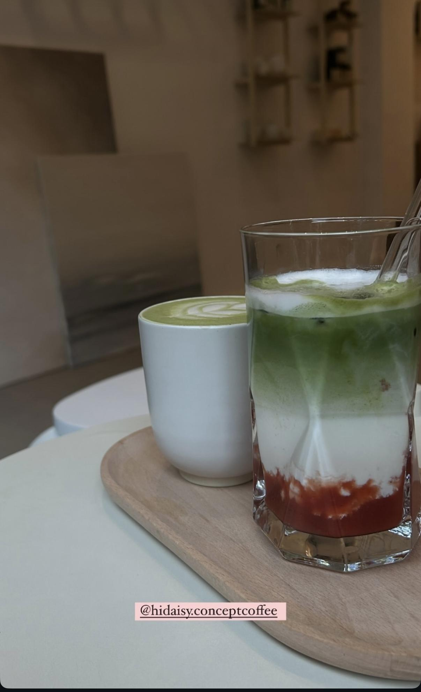
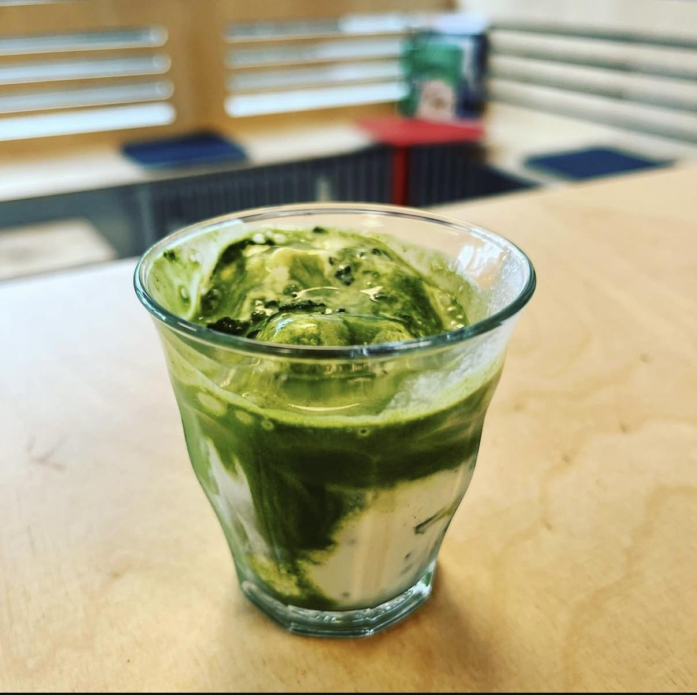
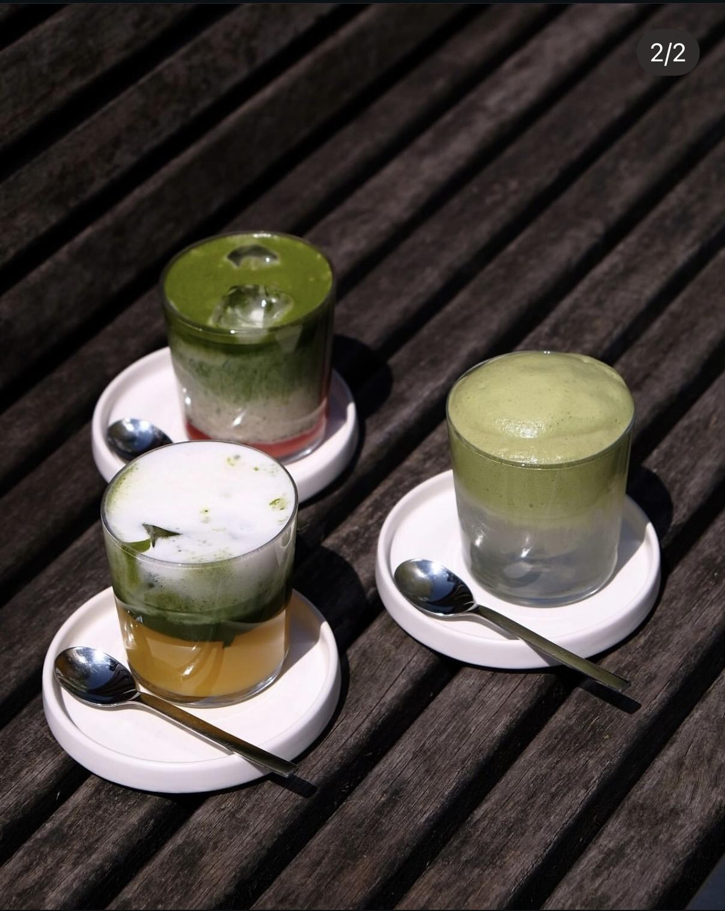
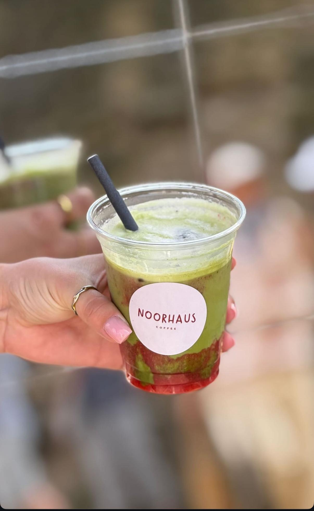
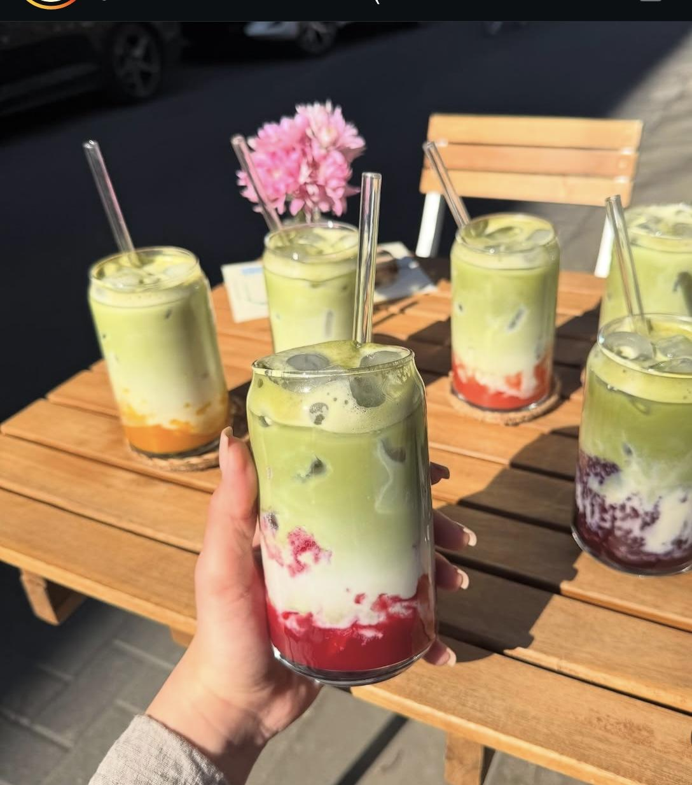

Matcha ist für mich mehr als nur ein Trendgetränk – es ist ein fester Bestandteil meines Alltags. Ob als Morgensritual, beim Lernen oder zum Genießen mit Freunden: Matcha geht einfach immer. In diesem Artikel stelle ich dir meine persönlichen fünf Lieblingsspots für Matcha in Köln vor. Jedes dieser Cafés hat seinen eigenen Stil, seine eigene Atmosphäre und natürlich ganz besondere Matcha-Kreationen.
Hi Daisy ist mein absoluter Lieblingsspot, wenn es um Matcha geht. Der Matcha hier ist intensiv, ausgewogen und wunderschön angerichtet. Die Location ist hell, freundlich und minimalistisch eingerichtet – perfekt für eine kleine Auszeit.
Track One Coffee ist ein originelles Café mit tollem Interieur und supernettem Personal. Die Matcha Latte ist geschmacklich stark, leicht nussig und wird mit viel Liebe serviert.
Wer auf echte Matcha-Qualität steht, sollte Omo probieren. Hier schmeckt man die Frische und Hochwertigkeit des verwendeten Matcha-Pulvers sofort. Die Zubereitung ist traditionell und sehr sorgfältig.
Ein echtes Hidden Gem: Das Café Noorhaus ist klein, charmant und hat eine liebevoll kuratierte Getränkekarte. Der Matcha wird mit hausgemachtem Fruchtpüree kombiniert – einfach himmlisch.
Nane ist bekannt für seine kreativen Matcha-Kombinationen. Die Atmosphäre ist nicht zu süß, sondern gut ausbalanciert. Besonders gefallen mir die saisonalen Specials – z. B. mit Mango, Hibiskus oder Kokos.
